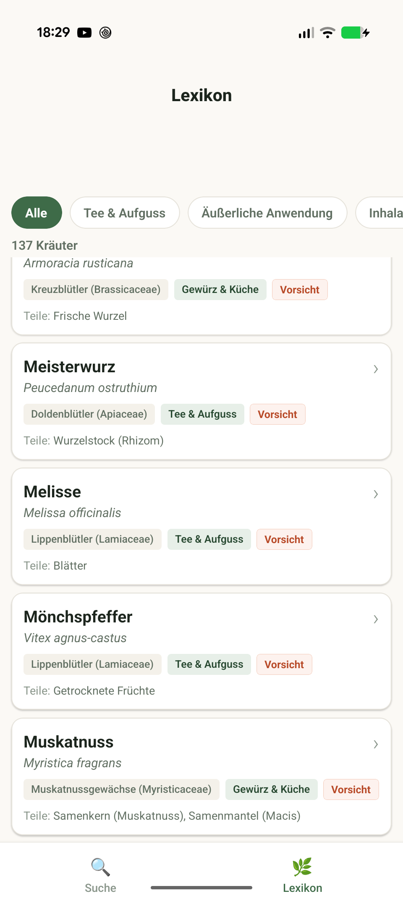
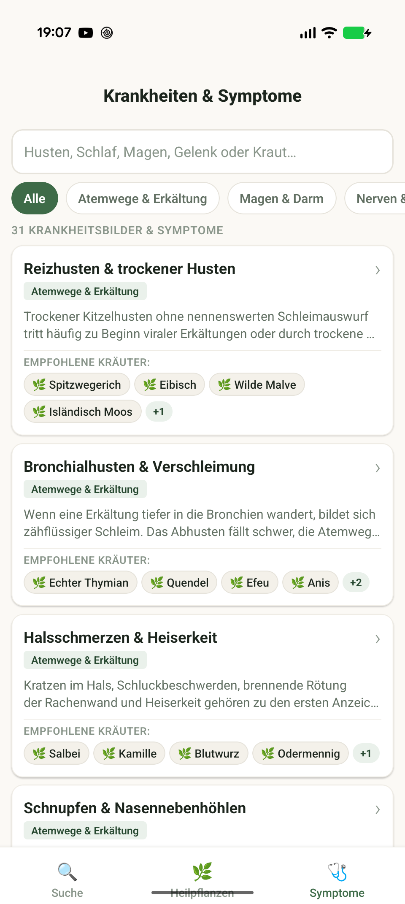
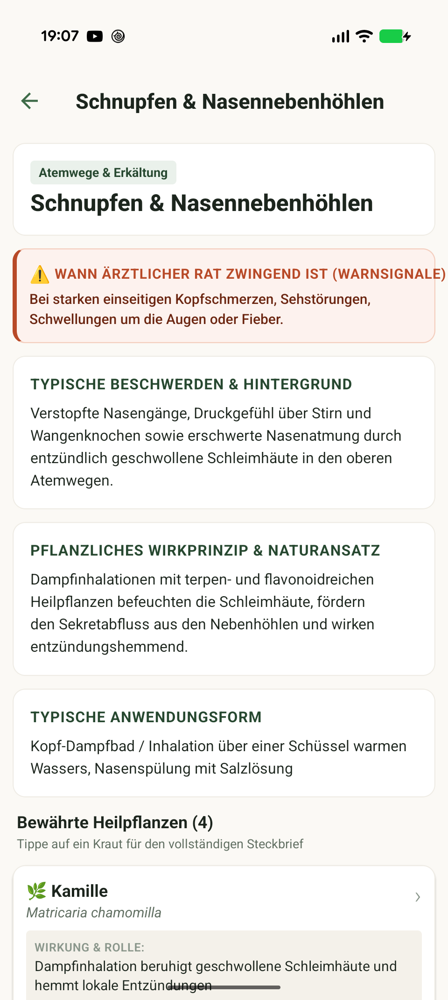

137 Heilpflanzen
Einträge mit deutschem und botanischem Namen, Pflanzenfamilie, verwendeten Pflanzenteilen und weiteren botanischen Informationen.
Ein übersichtliches Nachschlagewerk für alle, die sich für Kräuter, Pflanzenkunde und überlieferte Anwendungen interessieren. Entdecke Pflanzenporträts, botanische Namen, typische Zubereitungen und wichtige Vorsichtshinweise – direkt auf deinem Android-Smartphone.
Android-App · In EntwicklungOb Kamille, Salbei oder Pfefferminze: Das Lexikon bündelt Informationen über Heilpflanzen an einem Ort. Neben Pflanzenprofilen lässt sich der Bestand über Suchbegriffe, Themenbereiche und Beschwerdebilder erschließen.
Einträge mit deutschem und botanischem Namen, Pflanzenfamilie, verwendeten Pflanzenteilen und weiteren botanischen Informationen.
Suche nach Pflanzenname, lateinischer Bezeichnung, Anwendungsbereich oder verwandten Begriffen – auch mit mehreren Suchwörtern.
Ein thematischer Zugang zu Beschwerden und traditionell verwendeten Pflanzen – mit zusätzlichen Warnhinweisen.
Stöbere nach Kategorien, lies kompakte Steckbriefe und erfahre, welche Risiken, Verwechslungen oder möglichen Nebenwirkungen zu beachten sind.



Die App wird auf technische Zuverlässigkeit, fachliche Qualität und die Anforderungen von Google Play geprüft. Ein Erscheinungstermin und ein Verkaufspreis stehen noch nicht fest.
Noch nicht bei Google Play verfügbar